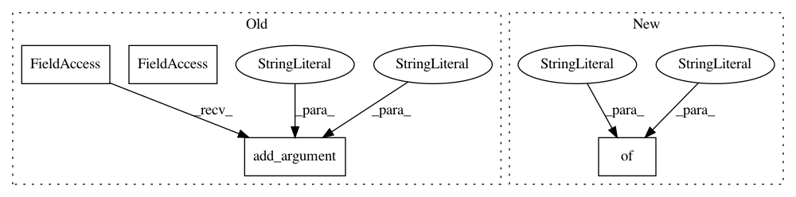

f8c0a542db6da7d19633d68c9a6f7ea150aa48a4,api/predict.py,,,#,6
Before Change
input_parser = MAX_API.parser()
input_parser.add_argument("image", type=FileStorage, location="files", required=True,
help="An image file (encoded as PNG or JPG/JPEG)")
input_parser.add_argument("threshold", type=float, default=0.7,
help="Probability threshold for including a detected object in the response in the range [0, 1] (default: 0.7). Lowering the threshold includes objects the model is less certain about.")
label_prediction = MAX_API.model("LabelPrediction", {
"label_id": fields.String(required=False, description="Class label identifier"),
After Change
from werkzeug.datastructures import FileStorage
from core.model import ModelWrapper
model_label = MAX_API.model("ModelLabel", {
"id": fields.String(required=True, description="Class label identifier"),
"name": fields.String(required=True, description="Class label"),
})
labels_response = MAX_API.model("LabelsResponse", {
"count": fields.Integer(required=True,
In pattern: SUPERPATTERN
Frequency: 3
Non-data size: 4
Instances
Project Name: IBM/MAX-Object-Detector
Commit Name: f8c0a542db6da7d19633d68c9a6f7ea150aa48a4
Time: 2019-03-05
Author: ajbozart@us.ibm.com
File Name: api/predict.py
Class Name:
Method Name:
Project Name: IBM/MAX-Object-Detector
Commit Name: cbb56ff6e14b8c69cfbc17c040f071b22bf7c01b
Time: 2018-07-19
Author: ajbozart@us.ibm.com
File Name: api/model.py
Class Name:
Method Name:
Project Name: HyperGAN/HyperGAN
Commit Name: bd1f28119aa42898c2cbe1a3a101b6e862e43a06
Time: 2020-06-14
Author: martyn@255bits.com
File Name: examples/experimental/next-frame.py
Class Name:
Method Name: